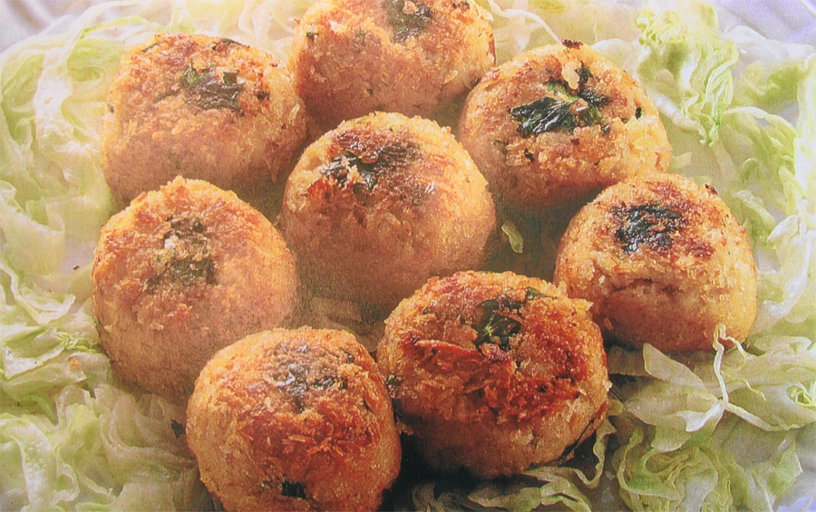

Tips, Shortcuts and Recipes
Tofu is a User Friendly Food
Many Chinese are puzzled by the fact that a great number of Westerners have such low opinion of tofu’s taste . Apparently, there is a misconception of this popular food product from the East.
 Some people suspect that, because tofu’s production process is so similar to that of dairy cheese, many think it should taste just as intense as traditional cheese. The fact is, however, that tofu is made from soybeans, not milk. This makes it not only a totally different species of cheese, but one that requires its own distinct preparation process to bring out tofu’s best flavor.
Some people suspect that, because tofu’s production process is so similar to that of dairy cheese, many think it should taste just as intense as traditional cheese. The fact is, however, that tofu is made from soybeans, not milk. This makes it not only a totally different species of cheese, but one that requires its own distinct preparation process to bring out tofu’s best flavor.
To the Chinese and other Asians, tofu is a user friendly food in the following ways:
First, tofu usually takes less time to prepare than some other food groups because it needs no washing or peeling and hardly any time in cutting. A tofu dish can be as simple as adding a drizzle of oyster sauce or some other aromatic dressing to it. If you are willing to invest more time and add better ingredients, it can be made quite elegant.
Second, tofu belongs to a fairly large class of foods, consisting of an intriguing variety of textures, colors and shapes that are an unexpected treat for the eye. Tofu comes in blocks, slices, tubes, lumps, noodles, triangles, balls, etc. To cook cake tofu, you can cut it into chunks or dices. An easy and sure way to use extra firm tofu is to smash it into a mixture, then add seasonings and reshape it into balls, patties, rolls or even loaves.
Unlike Westerners who feel more comfortable with firm tofu, most Chinese prefer soft tofu as it takes up flavor faster than firm tofu. It is used extensively in soups and stews. Below is a soft tofu recipe from The Intriguing World of Chinese Home Cooking.
Beef and Tofu Stew
Beef stew is a universally popular dish. Although each culture has its own version, in a way, the hearty taste of meat is quite similar. Many Chinese believe Taiwan has the best-tasting beef noodle soup in the world. However, since the cooking prcess of beef stew is rather complex is rather complex and unfamiliar to Westerners, I prefer to choose the simple American beef stew for this recipe. Using tofu to complement the beef flavor adds a very interesting dimension of taste, texture and nutrition. To make the job easier, I use make-ahead beef stew as the stew base. You may use your favorite beef stew recipies; or if pressed for time, you can even try the best brand of frozen beef stew from some supermarkets.

Although relatively unknown, this is an extremely delicious southern-style dish. Both beef and oyster sauce impart a deep flavor to the bland tofu. The key to success is using soft tofu and a tender cut of beef.
- 2 cups chicken broth
- 1 cup water
- 1 cup potato cubes, 2/3-inch
- 1 cup carrot cubes, about 2/3-inch
- ½ cup onion cubes, 2/3-inch
- 2 cups beef stew, with lots of sauce
- 1 ½ firm tofu cubes
- 1/3 cup chopped scallions for garnish
Directions
- In a medium soup pot, bring the chicken broth and water to a boil. Add all the vegetable cubes, cook over medium heat for about 15 minutes or until the carrot and potato cubes have softened.
- Cut the cooked beef in the stew into cubes to match the size of the vegetable cubes. Add the tofu cubes and beff cubes and beef sauce to the chicken broth with vegetable cubes. Continue to cook for about 10-15 minutes over medium heat until all the vegetable and tofu cubes are infused with the flavorful sauce. Add scallions for garnish. Serve warm.
Tofu-Smoked Fish Bites
I am constantly searching for food products or ingredients with substantial flavor to enrich my tofu dishes. I found the Smoked Whitefish Salad through my Son, Ray, who is a gourmet food lover. Since then, I have been using it as my "secret ingredient" to create serveral convenient be elegant tofu dishes for family and friends. The mixture of the Whitefish Salad and Crumbled Tofu also makes an ideal and healthy filling for sandwiches and wrappers.
- 1 Cup crumbled extra firm tofu, well drained
- 3 slices sandwich bread
- 2/3 cup Smoked Whitefish Salad (from Costco or supermarkets)
- 1/2 cup chopped celery
- 1/2 cup cooked red quinoa
- 1/3 cup edemame for garnish
Directions
- 1. Use a small round-shape cookie cutter, about 1-inch in diameter, cut each slice of bread into 3 round pieces. Bake the bread rounds at 325 degrees until lightly browned and crusty. This will be the base for the Tofu-Fish appetizer.
- 2.In another medium bowl, combine the Smoked Whitefish Salad with the crumbled Tofu, chopped celery, and half of the red quinoa as the filling for the mii rounds. To make a neat-looking filling on the round bread base, use a relatively small ice cream scoop, press about 1+ tablespoons of filling intto the scoop; then invert onto the bread round, press down and smooth out with your fingers. Repeat with the rest of the bread rounds.
- 3. Garnish the fish-tofu salad topping with red dots of quinoa and smalled-sized edamame---one in the middle and four surrounding on the side. Serve as an apppetizer or open-faced sanwich.
Tofu and Eggplant Salad
Normally tofu pairs well with ingredients with contrasting textures such as crunchy vegetables. Eggplant is an exception because tofu and eggplant share two common traits--they are both on the soft side and tend to absorb flavors---but eggplant picks up flavors quicker, which makes it an excellent partner for tofu.
- 1/2 container medium firm tofu
- 1/2 teaspoon salt
- 2 medium Chinese eggplants
- oil for sauteing
- 1 tablespoon chopped garlic
- 1 1/2 teaspoons minced ginger
- 2 teaspoons chopped shallot
- 3 sprigs basil
- 2 tablespoons chopped scallions for garnish
- 2 tablespoons chopped red bell pepper for garnish
Seasoning Sauce:
- 3 tablespoons soy paste or oyster sauce
- 1/2 tablespoon Wan Ja Shan fruit vinegar or balsamic vinegar
- 1/4 cup vegetable or chicken broth
- 1 teaspoon chili paste
- Salt and pepper to taste
- Cut the tofu into 2-inch rectangles. Place in a colander, sprinkle salt all over it and leave to drain for at least 15 minutes. In a frying pan, heat oil over medium-high heat then lightly brown the tofu to firm it up. Using a spatula, cut each piece in half lengthwise right in the pan. Remove and set aside.
- Rinse the eggplants lightly and cut each one in half, then cut into quarters lengthwise (or long strips). Place in a deep dish and set in a steamer or a wok filled with 2-inches of water. Steam over high heat for 8-10 minutes or until tender. Drain thoroughly, then cut the steamed eggplants into 4-inch strips for convenient serving.
- Combine the sautéed tofu and steamed eggplant strips on a serving platter. In a small frying pan, heat 2 tablespoons of oil over medium heat and sizzle the ginger, garlic and shallot for 1 minute or until fragrant. Then immediately add the seasonings and basil and cook for 1 minute until the flavors are well blended. Pick out the basil and add the scallions and red bell pepper
For garnish. Pour the cooked sauce over the entire dish. Serve warm or cold.
Crispy Seafood Tofu
Few people would recognize that this is a tofu dish since it looks like a pancake and taste almost like seafood. In this recipe, sauteing, garnish and adding a light sauce play an important role in transforming the tofu from plain to fancy.
- 1 container firm tofu
- 1/3 pound scallops or shrimp
- 1 teaspoon rice wine or dry sherry
- pepper to taste
- 4-5 pieces black mushrooms, soaked and chopped
- 3 tablespoons chopped cilantro
- 1/3 cup panko (Asian bread crumb)
- 1/3 cup sweet potato starch (optional)
- 1 egg white
- 2 tablespoons chopped orange bell pepper
- Oil for sauteing
- 1/4 cup chicken broth
- 1 stalk scallion
- 3 cloves garlic, peeled
- 1 teaspoon oyster sauce
- 1 teaspoon milk
- 2 teaspoons fish sauce or light soy sauce
- 3 tablespoon chicken broth
- 1 teaspoon sugar
- salt and pepper to taste
- In a mixing bowl, lightly crumble the tofu, add marinade and allow to sit for 10 minutes, then transfer to a colander to drain thoroughly. Cut the scallops into fine pieces. Add the rice wine and pepper, mix well and allow to marinate for 10 minutes, drain well.
- Combine the marinated tofu and scallops in a mixing bowl. Add the mushrooms and chopped cilantro and mix everything together. Shaped the mixture into medium hamburgers and place on a baking sheet. Bake at 350 degree for about 30 minutes or until most water evaporates. Remove and cool slightly.
- Dip the baked tofu hamburgers in egg white and then coat with both bread crumb and sweet potato starch. Set aside. In a medium non-stick pan, heat 3 tablespoons of oil over medium-high heat. Sauté both sides of tofu hamburgers until lightly browned and crusty. Remove to a serving platter.
- In a small skillet, cook the tofu sauce over low heat for about 5 minutes to extract flavors. When the sauce has cooked down to approximately ½cup of liquid, turn off the heat, then remove the scallions and garlic and discard. Add the green peas and chopped orange bell pepper to the sauce and pour over the tofu hamburgers. Serve immediately.